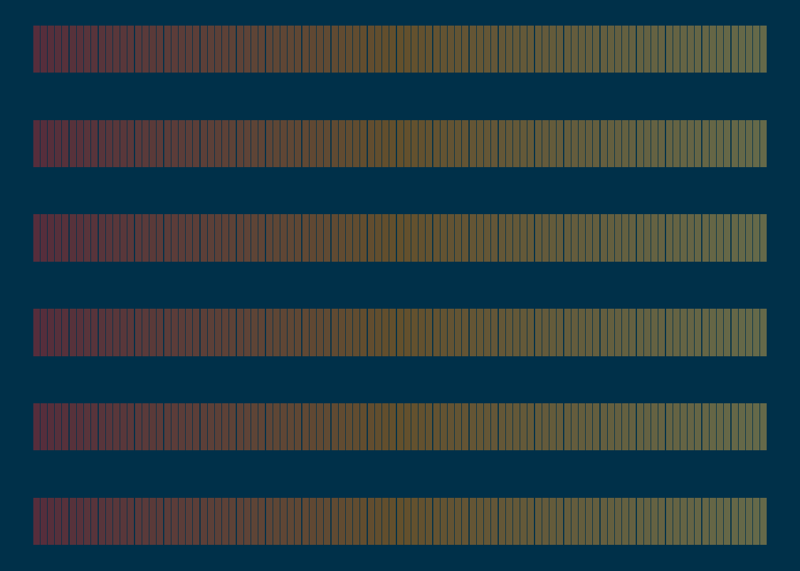
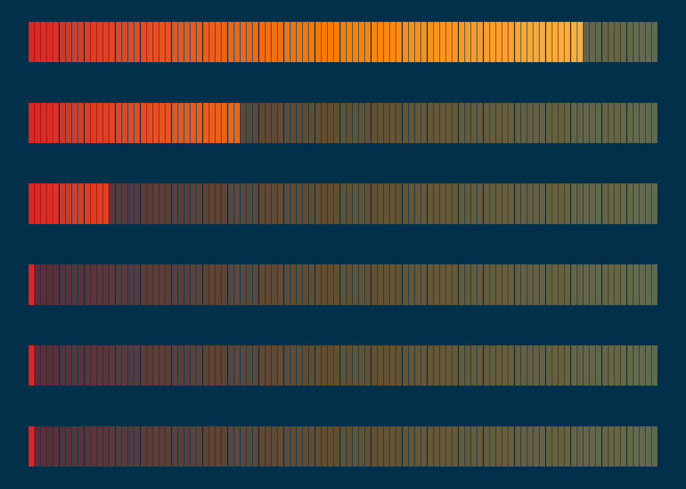
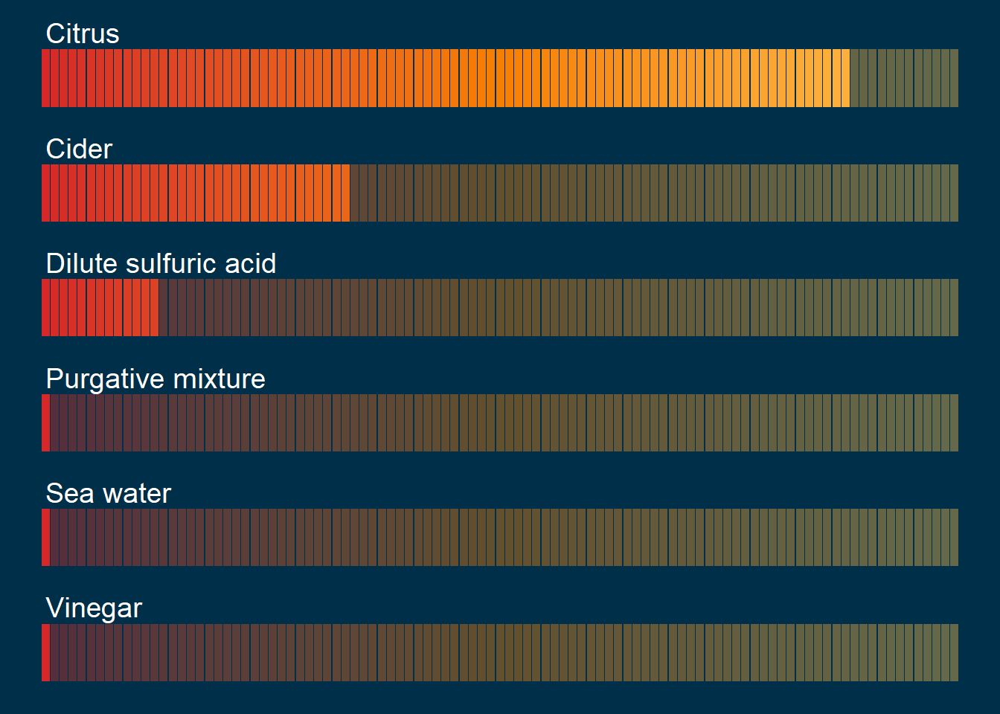

# Load the packages
library(tidyverse)
library(patchwork)Introduction
The #TidyTuesday weekly challenge is organised by the R4DS (R for Data Science) Online Learning Community.
Every tuesday throughout the year, participants work on a common dataset and share the plots they create.
The dataset for this challenge comes from the {medicaldata} R package.
Getting the data
First of all, let’s load the packages we’ll be using :
{tidyverse} to clean the data and create the plotstidyver
{patchwork} to assemble the plots
We can now download the dataset :
# Download the dataset
scurvy <- readr::read_csv("https://raw.githubusercontent.com/rfordatascience/tidytuesday/master/data/2023/2023-07-25/scurvy.csv")For a quick overview of the data, we use the glimpse() function from the {dplyr} package:
# Explore the dataset
glimpse(scurvy)Rows: 12
Columns: 8
$ study_id <dbl> 1, 2, 3, 4, 5, 6, 7, 8, 9, 10, 11, 12
$ treatment <chr> "cider", "cider", "dilute_sulfuric_acid", "d…
$ dosing_regimen_for_scurvy <chr> "1 quart per day", "1 quart per day", "25 dr…
$ gum_rot_d6 <chr> "2_moderate", "2_moderate", "1_mild", "2_mod…
$ skin_sores_d6 <chr> "2_moderate", "1_mild", "3_severe", "3_sever…
$ weakness_of_the_knees_d6 <chr> "2_moderate", "2_moderate", "3_severe", "3_s…
$ lassitude_d6 <chr> "2_moderate", "3_severe", "3_severe", "3_sev…
$ fit_for_duty_d6 <chr> "0_no", "0_no", "0_no", "0_no", "0_no", "0_n…The dataset has 12 observations (rows) and 8 variables (columns).
Each row represents a seaman with scurvy.
We find the following information in the different columns:
the treatment and dosage received
scores for 4 symptoms (gum rot, skin sores, weakness of the knees, lassitude)
was the seaman fit to resume duty or not
Cleaning and preparing the data
Cleaning the data
We use the following code to clean the data:
scurvy_clean <- scurvy |>
# remove dosing regimen column
select(-dosing_regimen_for_scurvy) |>
# transform from wide to long format
pivot_longer(cols = gum_rot_d6:fit_for_duty_d6,
names_to = "item",
values_to = "value") |>
# separate "value" column into "score" + "grade"
separate(col = value,
into = c("score", "grade"),
convert = TRUE) |>
# remove "_d6" suffix in item column
# replace "_" with white spaces
# transform character strings into sentences
mutate(item = str_remove_all(item, "_d6"),
across(treatment:item,
~str_replace_all(., pattern = "_",
replacement = " ")),
across(c(treatment, item, grade),
~str_to_sentence(.))) |>
# transform study_id into factor
# arrange factor levels by order of appearance
mutate(study_id = fct_inseq(as_factor(study_id)),
across(treatment:item, ~fct_inorder(.)))
head(scurvy_clean)# A tibble: 6 × 5
study_id treatment item score grade
<fct> <fct> <fct> <int> <chr>
1 1 Cider Gum rot 2 Moderate
2 1 Cider Skin sores 2 Moderate
3 1 Cider Weakness of the knees 2 Moderate
4 1 Cider Lassitude 2 Moderate
5 1 Cider Fit for duty 0 No
6 2 Cider Gum rot 2 ModerateCalculating the overall improvement score
We use the following code to calculate an overall improvement score:
overall_improvement <- scurvy_clean |>
# remove "Fit for duty" column
filter(item != "Fit for duty") |>
# calculate total score by treatment
summarise(total = sum(score),
.by = treatment) |>
# calculate overall improvement score as %
mutate(improvement_score = 100 * (24-total) / 24) |>
# remove total column
select(-total) |>
# arrange data by increasing improvement score
arrange(improvement_score)
head(overall_improvement)# A tibble: 6 × 2
treatment improvement_score
<fct> <dbl>
1 Vinegar 0
2 Sea water 0
3 Purgative mixture 0
4 Dilute sulfuric acid 12.5
5 Cider 33.3
6 Citrus 87.5Creating the plots
Viewing the overall improvement
FIrst, we create data points to draw vertical bars from 0 to 100:
# Create data points to draw bars from 0 to 100
p1_bars <- overall_improvement |>
# keep treatment column
select(treatment) |>
# add a row id column named "y"
rowid_to_column(var = "y") |>
# repeat each row 101 times (0 to 100)
slice(rep(1:n(), each = 101)) |>
# add a column with positions to draw bars
mutate(x = rep(0:100, times = 6))Then we use the same approach to create data points for the overall improvement scores:
# Create data points to draw bars for improvement scores
p1_values <- overall_improvement |>
# round improvement score %
mutate(improvement_score = round(improvement_score)) |>
# select treatment + improvement score columns
select(treatment, improvement_score) |>
# join p1_bars to get positions for bars from 0 to score
left_join(p1_bars) |>
# extract max score for each treatment
mutate(max_score = max(improvement_score),
.by = treatment) |>
# remove rows when x > max_score
filter(x <= max_score) |>
# order columns
select(y, treatment, x)Joining with `by = join_by(treatment)`Let’s create the background bars with all values from 0 to 100 for each one of the 6 treatments:
(p1_bg <- ggplot() +
geom_segment(data = p1_bars,
aes(x = x, xend = x, y = y - 0.25, yend = y + 0.25,
colour = x),
linewidth = 2,
alpha = 0.4,
show.legend = FALSE) +
scale_colour_gradient2(low = "#d62828",
mid = "#f77f00",
high = "#fcbf49",
midpoint = 50) +
theme_void() +
theme(panel.background = element_rect(fill = "#003049",
colour = "#003049"),
plot.background = element_rect(fill = "#003049",
colour = "#003049"))
)
Now, let(s add the values for the improvement scores to this background plot:
(p1 <- p1_bg +
geom_segment(data = p1_values,
aes(x = x, xend = x, y = y - 0.25, yend = y + 0.25,
colour = x),
linewidth = 2,
show.legend = FALSE)
)
Finally, we’ll add labels to indicate the names of the different treatments:
(p2 <- p1 +
geom_text(data = p1_values |> distinct(y, treatment),
aes(x = 0, y = y + 0.4, label = treatment),
size = 5, colour = "white", hjust = 0)
)